In this panel the user can modify and manage a single slab. The following example window is displayed both when the user adds a new slab, and when they decide to modify an existing slab, through the dedicated section:
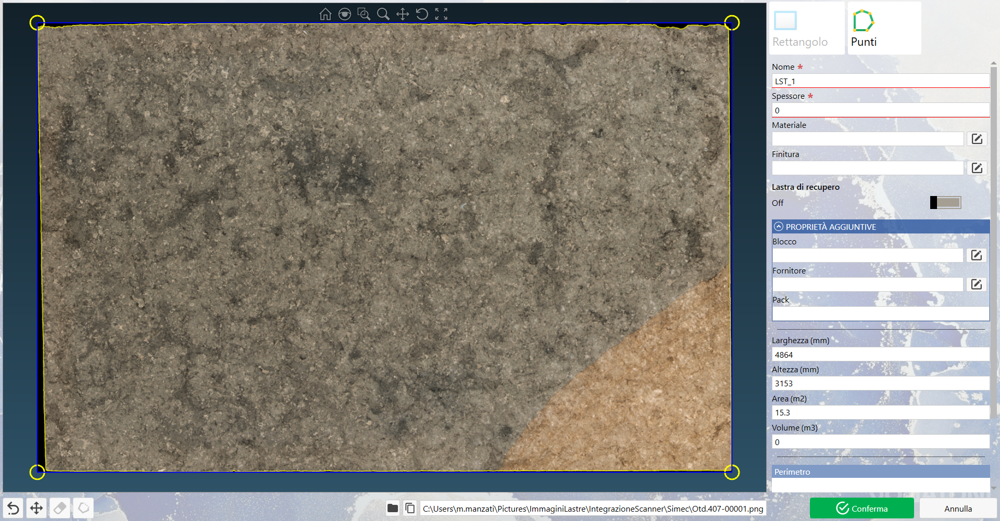
Preview slab
This section occupies the central and left part of the panel and allows the slab image viewing.
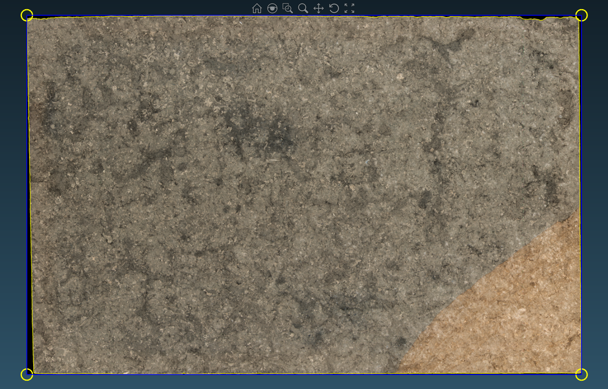
Viewing tools
These tools, located in the upper central part of the slab preview, allow the user to perform the following actions:
Home Reset to the initial viewing state at any movement made within the preview.
Magnifying Glass Activates a magnifying lens that performs a temporary zoom on the area under the mouse pointer.
Zoom Window Allows zooming in on a selected area by selecting a perimeter with the mouse.
Zoom Allows to zoom in or out of the zoom area.
Mode pan Allows movement in the preview area along the X and Y axes.
Rotate Permits rotation of the slab image in the preview area around the X, Y and Z axes.
Zoom Fit Set the viewing to the full size of the image and the preview perimeter.
Perimeter
In the slab preview it is possible to set the perimeter, which will be displayed as follows:
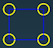
Perimeter Shows the entire perimeter area in the preview. The perimeter can be resized using the vertices, highlighted by yellow circular indicators, and modified via the Perimeter Tool.
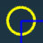
Corner Represents a vertex of the perimeter. A vertex, to be valid, must be connected to two sides. The vertex can be added, moved or deleted.
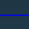
Side Represents a side of the Perimeter, which appears only if both adjacent vertices are connected.
Perimeter tools
Rectangle Allows setting the perimeter of the slab preview via a resizable rectangle.
Points Allows setting the perimeter of the slab preview via vertices.
Perimeter actions
Remove last point Allows removing the last inserted point in the preview perimeter (yellow circle) without closing the perimeter.
Move perimeter Allows activating the mode to move the entire perimeter in the slab preview
Delete point Allows activating the delete point mode: by clicking on a vertex of the perimeter, it removes it and recalculates the perimeter with the remaining points.
Close perimeter Allows closing the perimeter by joining the two extreme vertices of the polyline.
Slab defects
All perimeters present in the image are listed in the lower section of the parameters.
In the **Parameters** section, at the bottom, the last part contains a list with the **Perimeter** indicating how many perimeters are present in the list.
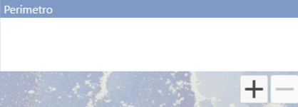
The first always indicates the perimeter of the entire slab; the others will have a red perimeter to signal defective areas. The first perimeter in the list refers to the perimeter of the entire slab. Each subsequent perimeter will be colored red and will indicate to the user the defective areas as shown in the following example image:
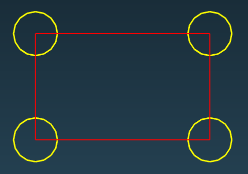
Buttons
Add Allows adding a defect perimeter to the list and in the slab preview to be set.
Remove Remove the currently selected defect perimeter from the list and preview.
NOTE:
If the list contains only the main perimeter, this button will be disabled.
Parameters
Main parameters
NOTE
A red asterisk indicates the mandatory field to be filled by the user.
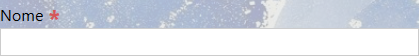
Name Unique identifier of the Slab.
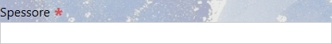
Thickness Real thickness of the slab in millimeters.
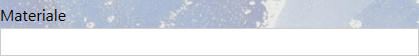
Material Type of stone associated with the slab.
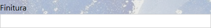
Finishing Surface treatment of the slab.
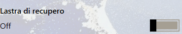
Recovery Slab Indicate whether the slab is a recovery slab or not.
Additional properties
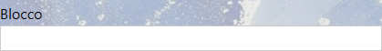
Block Block code of slab origin.
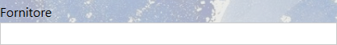
Supplier Slab origin.
Pack Logistics/commercial grouping.
Perimeter properties
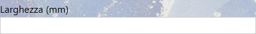
Width Value indicating the width of the previewed perimeter.
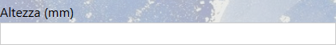
Height Value indicating the height of the perimeter shown in preview.
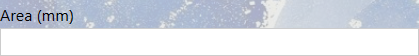
Area Value calculated based on the slab's width and height. This field is not modifiable by the user.
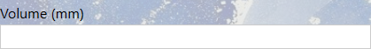
Volume Value calculated based on slab area and thickness. This field is not modifiable by the user.
File location
In the lower section of the slab modification panel, the user can view and access the position of image files and slab parameters.
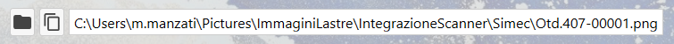
The absolute path of the image linked to the slab is automatically set, the following buttons are also available to the user: